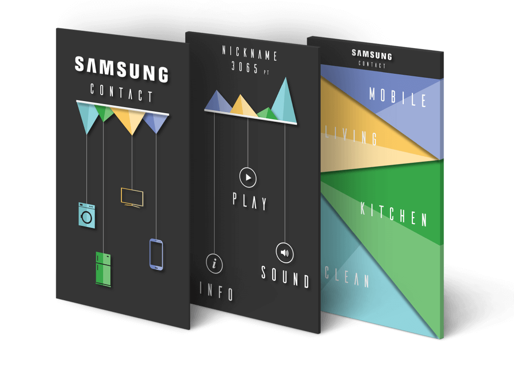
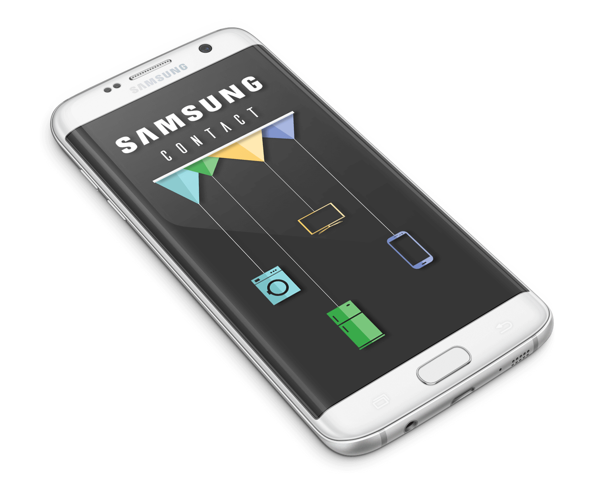
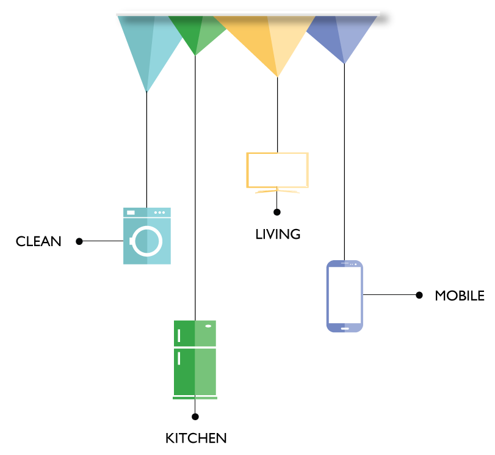
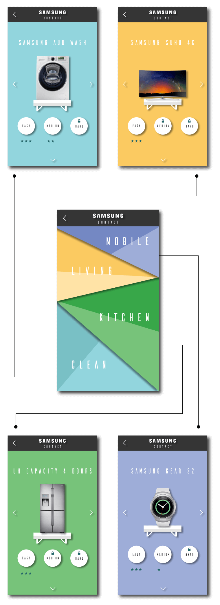
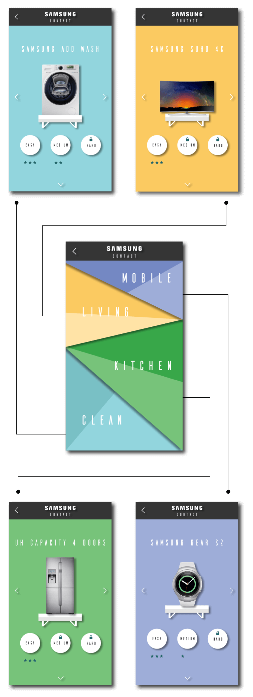

SAMSUNG CONTACT

BRIEF
To create a digital experience for their customers.
RESEARCH
We found out that Samsung has a vast range of products and is a very technologically advanced brand, but it’s customers are not really aware about it.
SOLUTION
To create an unforgettable experience for the customers and at the same time to make them discover the Samsung world. The best way to do that is through a game that will entertain them and at the same time educate the customers about the products and create a connection with them. We named our app "Samsung Contact" because through our game we are trying to bring the Samsung products in contact with the customers.
CLIENT / SCHOOL / COURSE / ROLE
Samsung / SPD / Service Design (Group Project)/ Design
TYPE - Mobile Application
Color Palette
Design Theme
We wanted an arcade style in our game but at the same time we didn’t want to lose the aesthetic style of Samsung, so we created a blend between the two with our flat design theme. As we wanted to show real Samsung products, we decided to use shadows to make it more realistic. Each game family has been assigned a color of it’s own.
 

Game Description
For each family we selected few products that stand out from Samsung’s competitors for their features.
Based on the feature, we came up with some intuitive time based mini-games, one for each product.
Each mini-game will have 3 levels of difficulty.
The customer will be scored between a frequency of 0 (task failed) to 3 , according to how fast/well the user completes the task.